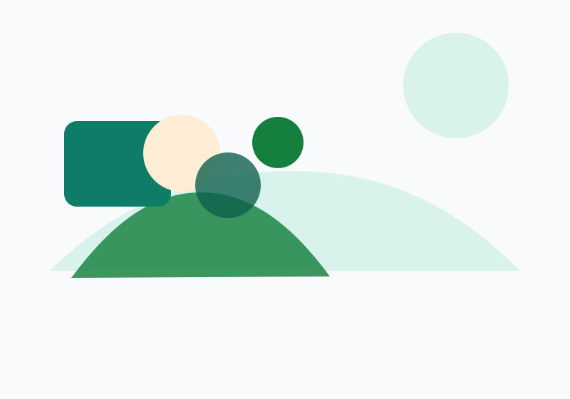
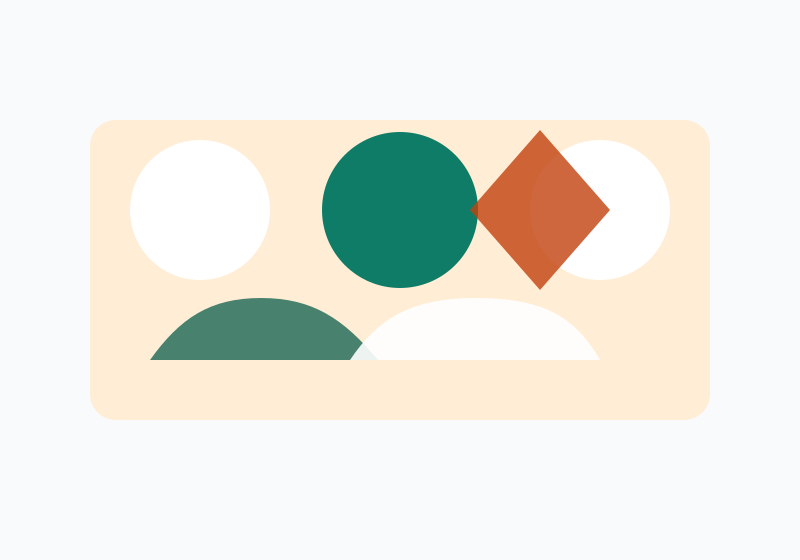
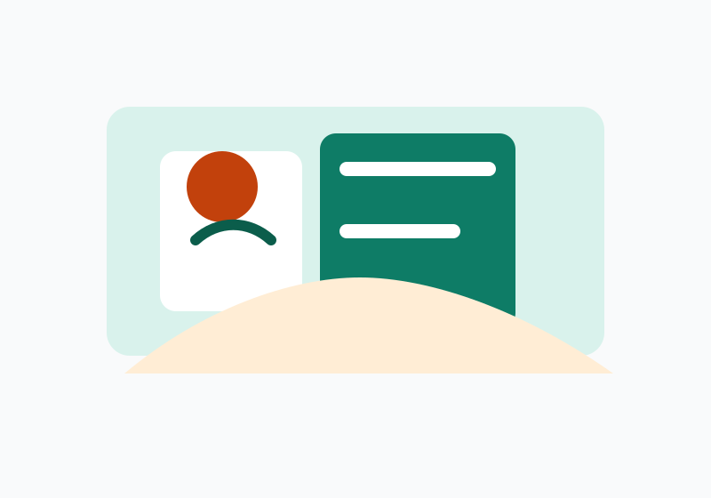
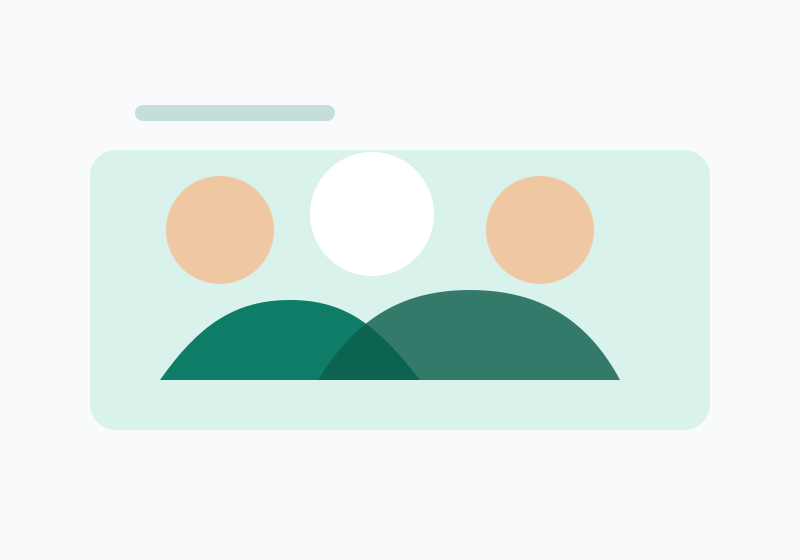
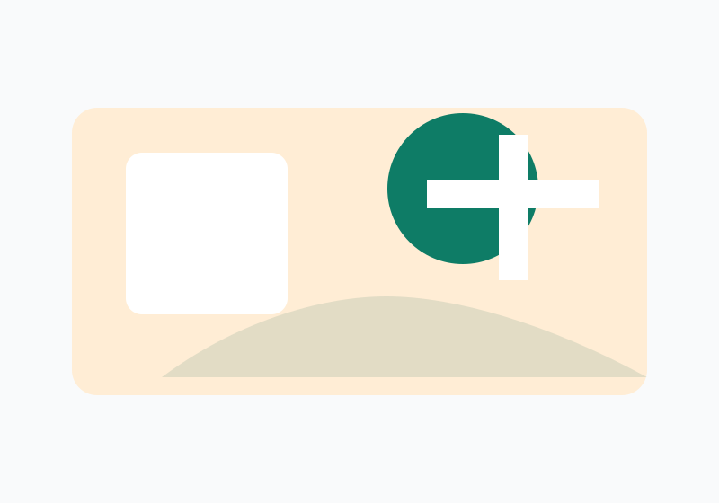
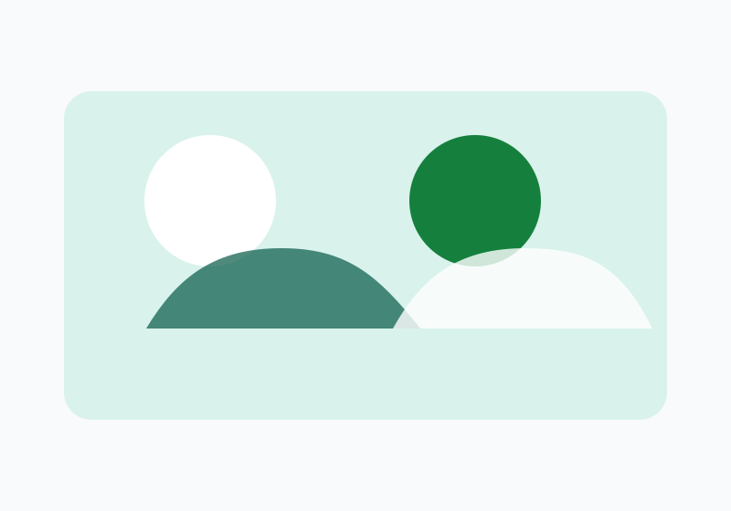
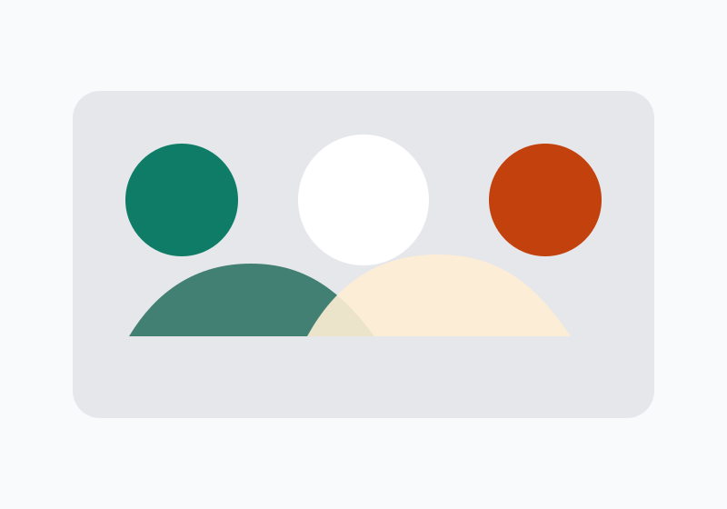
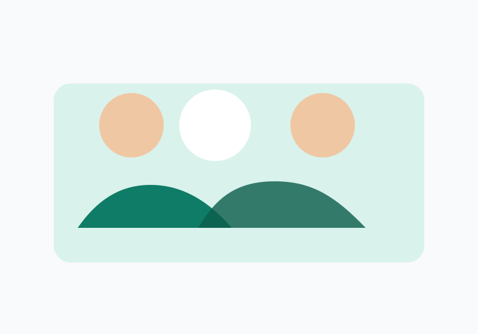

Escolas do Futuro
Circulação de materiais didáticos, reforço escolar e acompanhamento de aulas para crianças e jovens.
Atuamos em educação, saúde, cultura, meio ambiente e apoio social com ação direta nas comunidades locais.
Circulação de materiais didáticos, reforço escolar e acompanhamento de aulas para crianças e jovens.

Consultas, ações preventivas e orientação sobre saúde física, mental e bem-estar comunitário.

Hortas comunitárias, ações de coleta seletiva e sensibilização ambiental para bairros da periferia.

Oficinas de música, dança, teatro e expressão artística para fortalecer a cultura local.

Entrega de refeições e cestas básicas em parceria com cozinhas comunitárias e voluntários.

Ações de apoio social, acolhimento e organização de mutirões para proteger famílias locais.
Você pode contribuir com valores mensais, materiais escolares, alimentos, itens de higiene ou recursos para nossa logística.
Quero doar




Obrigado por acompanhar a ONG Esperança.
FecharVocê pode fazer uma doação única, ser doador mensal ou contribuir com materiais e serviços essenciais para nossas ações.